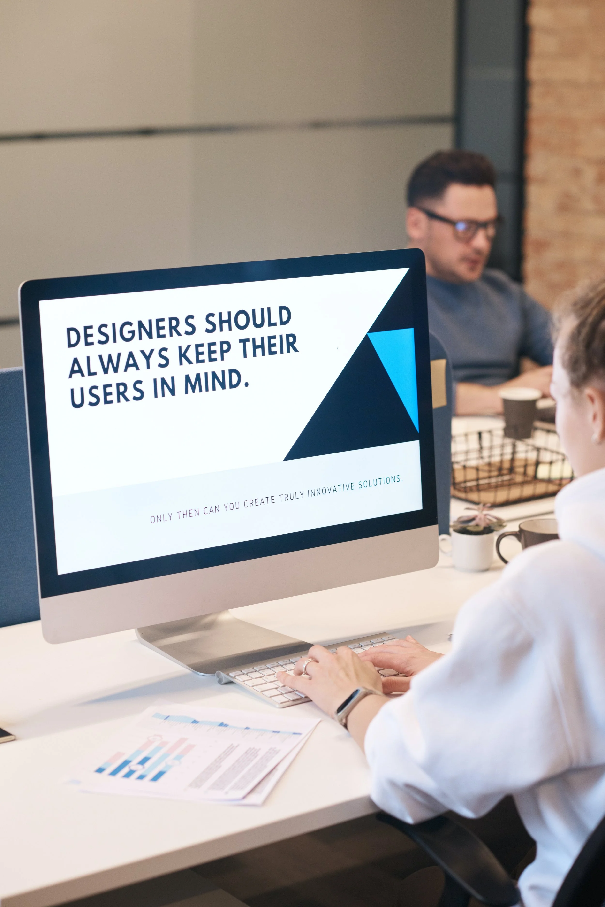

AI Content Systems at Intuit
Designing AI-assisted content infrastructure to scale clarity, consistency, and access
Overview

As content ecosystems grow, the challenge shifts from writing individual pieces of content to maintaining consistency, accuracy, and accessibility at scale. At Intuit, I identified a gap between the volume of help content we had and the ability for teams—especially support and content creators—to quickly surface and reuse that information.
This project focuses on how I designed and implemented an AI-assisted content system that treats knowledge as infrastructure, not just documentation.
Context
Intuit's ProTax Group maintains thousands of external help articles supporting professional tax products. These articles are:
- Authored over many years
- Owned by multiple teams
- Frequently updated due to tax law and product changes
While the content existed, it was difficult for writers, support experts, and collaborators to efficiently search, synthesize, and reuse it—especially across products and regions.
At the same time, access to internal AI tools was uneven. Full-time employees had limited access to AI tooling, while many Tier 1 and Tier 2 support experts were contractors without access to those tools at all.
The Problem
Teams struggled with:
- Rewriting or duplicating existing help content
- Spending excessive time searching for authoritative answers
- Inconsistent language and guidance across products
- Limited access to AI tools for the people who needed them most
The core challenge wasn't a lack of content—it was a lack of structured, accessible systems for using it.
My Role
I initiated and owned this project independently alongside my core responsibilities as a UX Content Designer.
My role included:
- Identifying the content access and reuse gap
- Designing the system architecture for capturing and structuring content
- Building and maintaining scripts to ingest and organize content
- Creating AI-assisted workflows for writers and collaborators
- Partnering cross-functionally to explore scalable delivery via dashboards and Slack-based tools
The Solution
I designed an AI-assisted content system with three core layers:

1. Content capture and structuring
I built scripts to programmatically collect external help content across products, preserving metadata such as URLs, titles, and identifiers. Content was normalized and organized by product and use case.
2. AI-assisted authoring and reuse
The structured content was integrated into product-specific AI environments, enabling writers to quickly:
- Locate relevant existing guidance
- Consolidate overlapping articles
- Draft updates with greater consistency and confidence
3. Expanded access via internal tooling
To address access limitations, I partnered with others exploring dashboards and Slack-based AI assistants—meeting support experts where they already worked, without requiring direct access to AI platforms.
Impact
While this system began as a personal productivity tool, it grew into a shared capability that:
- Reduced duplicated authoring effort
- Improved consistency across help content
- Enabled faster onboarding for new writers and collaborators
- Expanded access to authoritative answers for support experts
The system has since been extended across multiple products and regions, including bilingual content support.
Why This Matters
This project reflects how I approach AI in content design:
- AI as infrastructure, not novelty
- Systems that respect real organizational constraints
- Design decisions grounded in how people actually work